<!DOCTYPE html>
<html>
  <head>
    <meta charset="utf-8">
    <meta name="viewport" content="width=device-width, initial-scale=1.0">
    <meta property="og:type" content="article">
    <meta property="og:title" content="Зарплатный калькулятор getmatch • Артём Самсонов • Продуктовый дизайнер">
    <meta property="og:description" content="Дизайн сервиса на пересечении интересов кандидатов и клиентов">
    <meta property="og:image" content="http://artemsamsonov.com/img/case-04.jpg">
    <link href="https://fonts.googleapis.com/icon?family=Material+Icons" rel="stylesheet">
    <link rel="stylesheet"><!-- Yandex.Metrika counter --> <script type="text/javascript" > (function(m,e,t,r,i,k,a){m[i]=m[i]||function(){(m[i].a=m[i].a||[]).push(arguments)}; m[i].l=1*new Date();k=e.createElement(t),a=e.getElementsByTagName(t)[0],k.async=1,k.src=r,a.parentNode.insertBefore(k,a)}) (window, document, "script", "https://mc.yandex.ru/metrika/tag.js", "ym"); ym(88097279, "init", { clickmap:true, trackLinks:true, accurateTrackBounce:true, webvisor:true }); </script> <noscript><div></div></noscript> <!-- /Yandex.Metrika counter -->
    <title>Зарплатный калькулятор getmatch • Артём Самсонов • Продуктовый дизайнер</title>
  <link href="./css/style.bundle.css" rel="stylesheet"></head>
</html>
<body class="body_light">
  <header class="header header_light">
    <div class="header__logo"><a href="index.html">Артём Самсонов</a></div>
    <div class="header__menu"><a class="header__menu-elem" href="https://t.me/forrrealism">telegram</a><a class="header__menu-elem" href="https://www.linkedin.com/in/a-samsonov/">linkedin</a><a class="header__menu-elem"><span>sayocean450🐶gmail.com</span></a></div>
  </header>
  <div class="content">
    <div class="article">
      <section>
        <h1>Зарплатный калькулятор getmatch</h1>
        <p class="article__annotation">Раздел сервиса на пересечении интересов кандидатов и клиентов.</p>
        <h2>Мой вклад</h2>
        <div class="article__tags">
          <div class="tag_light tag">Глубинные интервью</div>
          <div class="tag_light tag">Формулировка JTBD</div>
          <div class="tag_light tag">Архитектура сценариев</div>
          <div class="tag_light tag">UX/UI-дизайн</div>
          <div class="tag_light tag">UX-редактура</div>
          <div class="tag_light tag">Спецификации</div>
          <div class="tag_light tag">Сопровождение разработки</div>
        </div>
        <h2>Проблема</h2>
        <div class="article__2-cols">
          <div class="article__col"> 
            <h3>Для кандидатов</h3>
            <p>На серии глубинных интервью кандидаты отмечали, что не понимают, достаточно ли им платят</p>
          </div>
          <div class="article__col">
            <h3>Для клиентов</h3>
            <p>Компании не понимали, сколько платить — им нужна была аналитика, основанная на <em>реальных</em> данных</p>
          </div>
        </div>
        <h2>Job to be Done</h2>
        <div class="article__2-cols">
          <div class="article__col">
            <h3>Для кандидата</h3>
            <p>Понять, справедливо ли мне платят и какие условия я могу просить у компаний</p>
          </div>
          <div class="article__col"> 
            <h3>Для компаний</h3>
            <p>Определить зарплатную вилку, которую предлагать кандидатам и сотрудникам</p>
          </div>
        </div>
        <h2>Задача</h2>
        <p>Создать решение, которое:</p>
        <ul>
          <li>даст кандидатам понимание, насколько их зарплата соответствует рынку</li>
          <li>мотивирует делиться зарплатой добровольно</li>
          <li>позволит компаниям покупать агрегированную аналитику</li>
        </ul>
        <h2>Решение</h2>
        <p> Новый раздел «Зарплаты» показывает график зарплат по специальности. Чтобы посмотреть статистику по уровням, городам, форматам и топ-компаниям, нужно анонимно оставить зарплату.</p>
        <p>Сразу показали товар лицом, закрыв платные значения заглушками:</p>
        <p class="article__image"><a href="../img/getmatch-calc-01.jpg" target="_blank">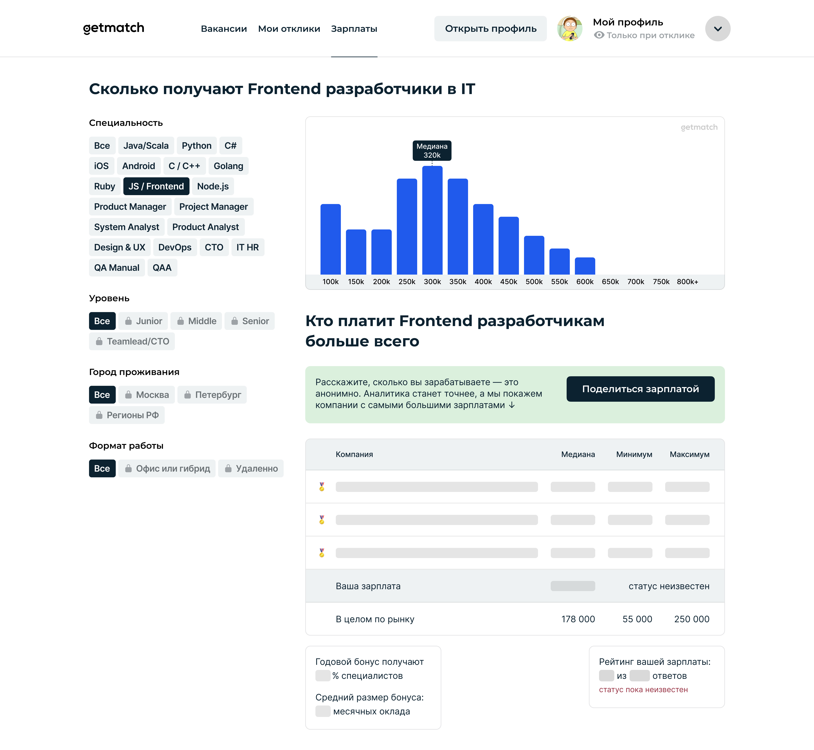</a></p>
        <p>В форме добавления объяснили, зачем нам понадобилось каждое из полей:</p>
        <p class="article__image"><a href="../img/getmatch-calc-02.jpg" target="_blank">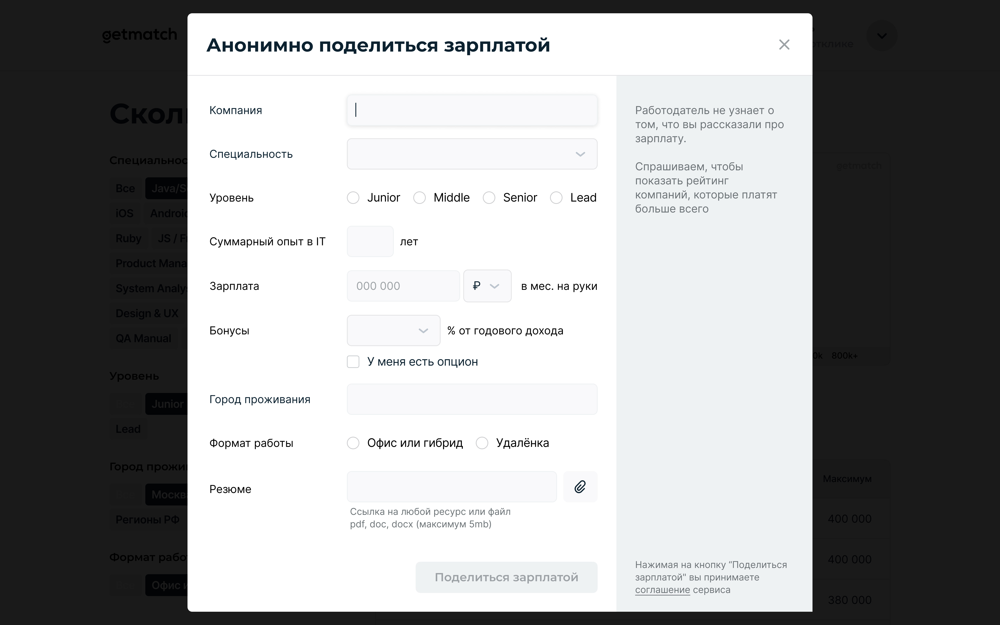</a><span class="article__image-caption">Например, при выборе компании</span></p>
        <p class="article__image"><a href="../img/getmatch-calc-02b.jpg" target="_blank">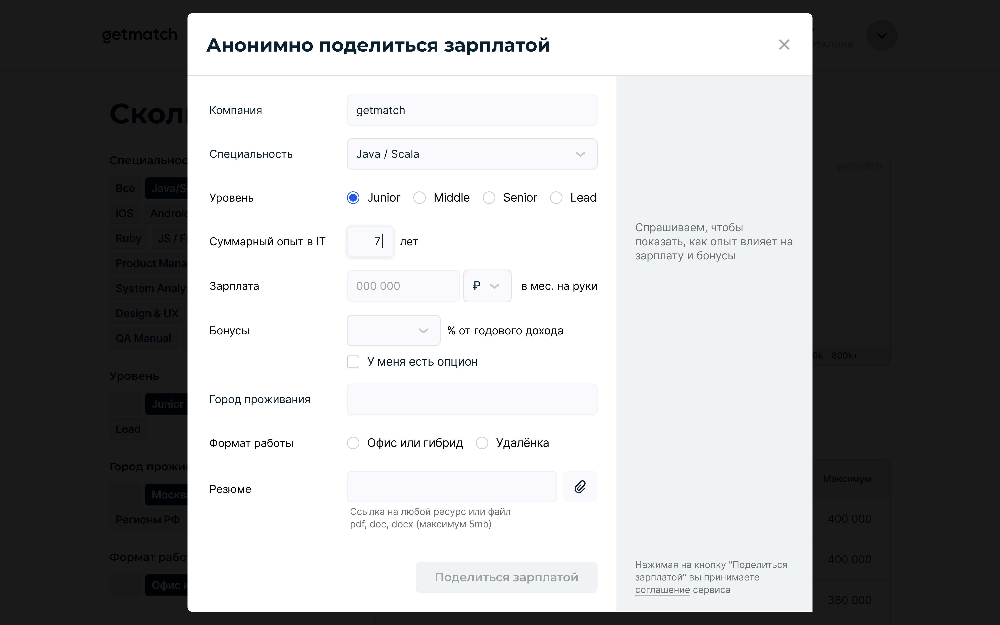</a><span class="article__image-caption">…или при указании опыта</span></p>
        <p>Провалидировали все необходимые ошибки ввода:</p>
        <p class="article__image"><a href="../img/getmatch-calc-03.jpg" target="_blank">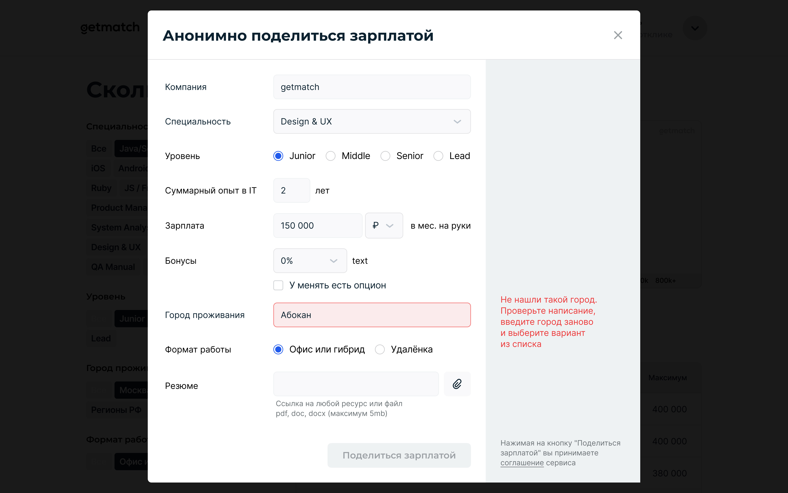</a></p>
        <p>При попытке добавить зарплату без нужных данных подсветили пользователю, какие поля придётся заполнить:</p>
        <p class="article__image"><a href="../img/getmatch-calc-04.jpg" target="_blank">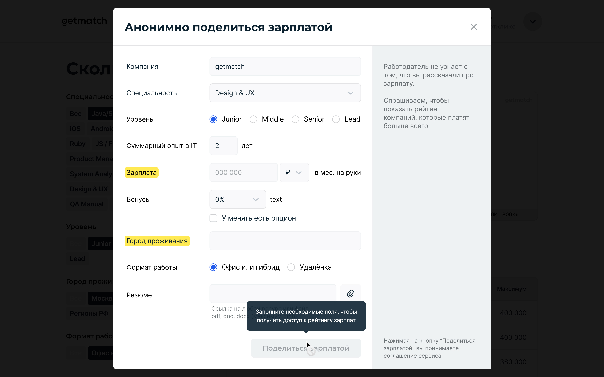</a><span class="article__image-caption">Придётся всё же указать зарплату и город проживания</span></p>
        <p>Добавление зарплаты не только разблокирует фильтры, но и позволит оценить своё положение на рынке:</p>
        <p class="article__image"><a href="../img/getmatch-calc-05.jpg" target="_blank">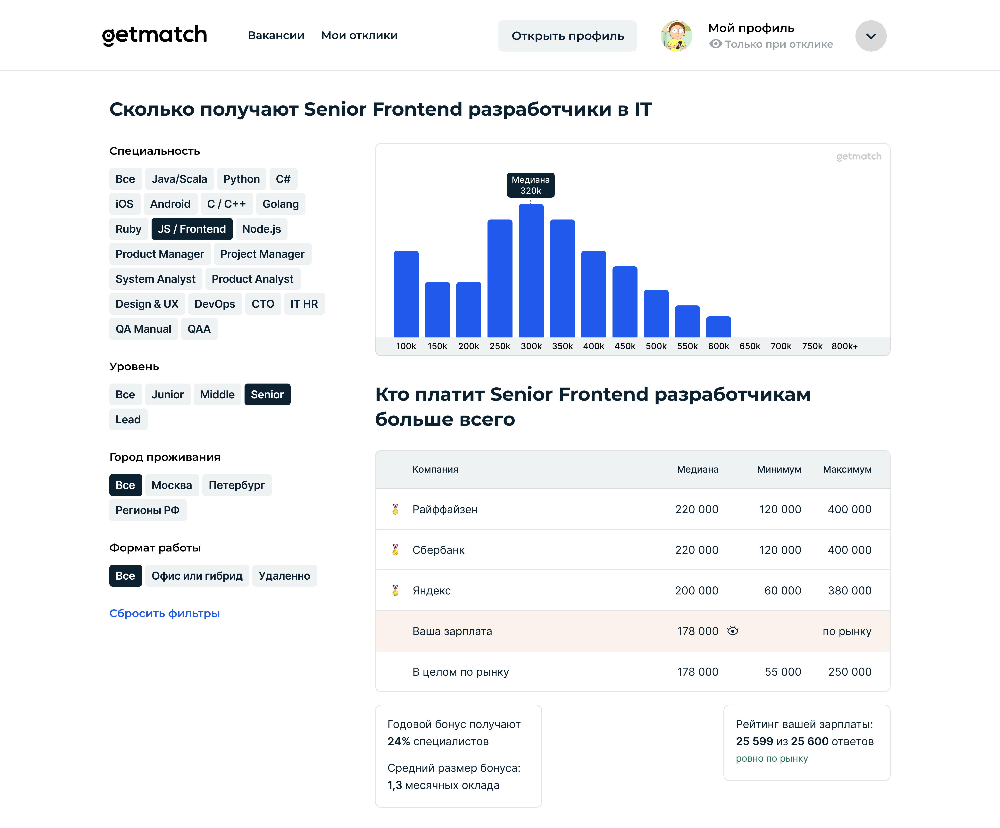</a></p>
        <p>У зарплат выше, по рынку или ниже рынка есть цветовые индикаторы:</p>
        <p class="article__image"><a href="../img/getmatch-calc-06.jpg" target="_blank">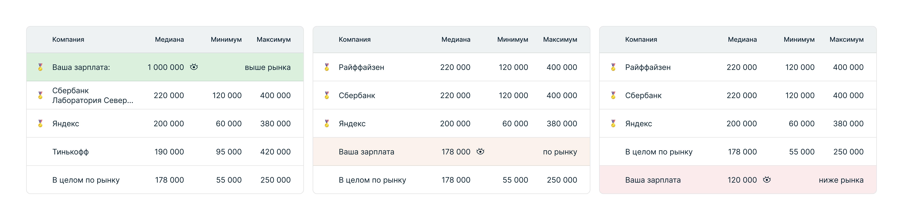</a></p>
        <p>Зарплату можно скрыть от чужих глаз, чтобы заскриншотить данные друзьям или не прятаться в опенспейсе:</p>
        <p class="article__image"><a href="../img/getmatch-calc-07.jpg" target="_blank">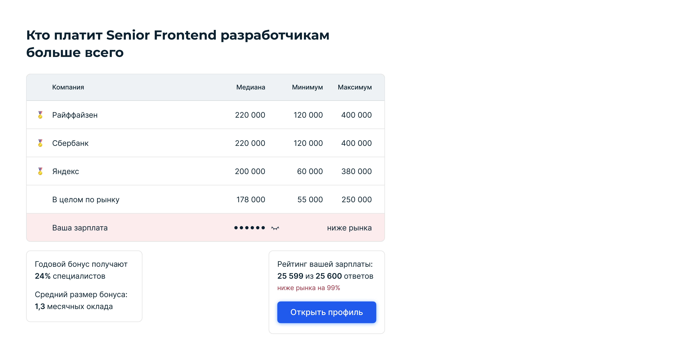</a></p>
        <p>Если зарплат не хватает, покажем заглушку и позже пришлём оповещение в телеграм-бот:</p>
        <p class="article__image"><a href="../img/getmatch-calc-08.jpg" target="_blank">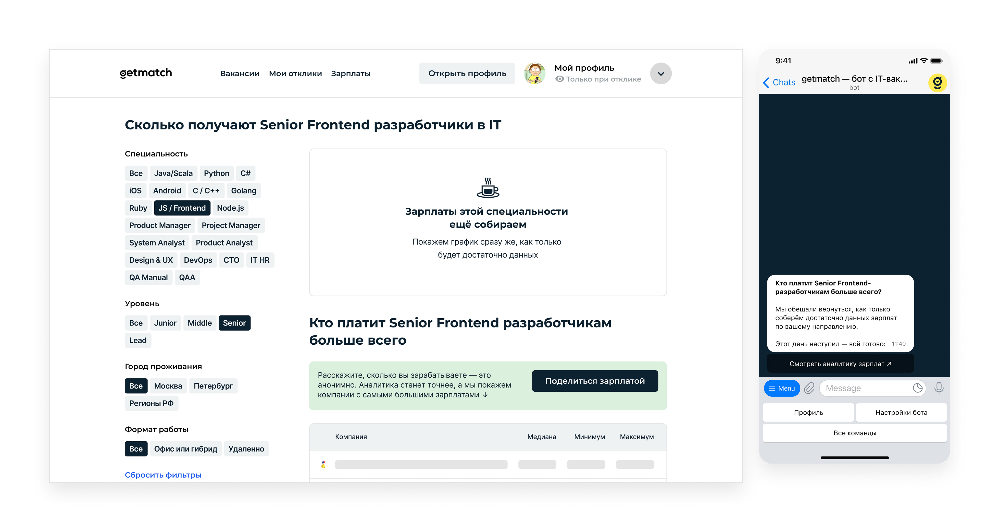</a></p>
        <p>У всех страниц, компонентов и состояний есть адаптивные версии:</p>
        <p class="article__image"><a href="../img/getmatch-calc-10.jpg" target="_blank">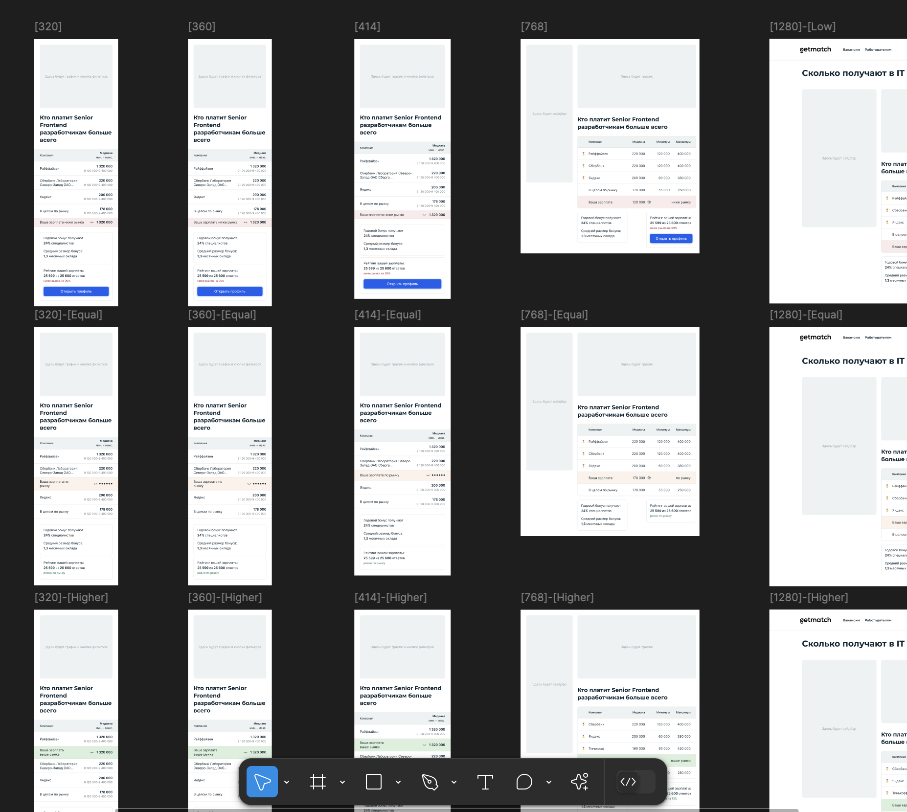</a></p>
        <p>В рамках задачи провели с UX-писателем серьёзную работу над формулировками. Я руководил процессом и ревьюил варианты:
          <p class="article__image"><a href="../img/getmatch-calc-11b.jpg" target="_blank">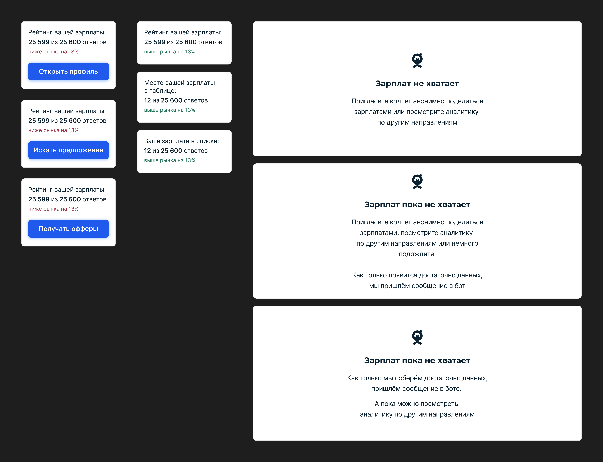</a><span class="article__image-caption">Несколько вариаций обсуждаемых формулировок</span></p>
          <p class="article__image"><a href="../img/getmatch-calc-11.jpg" target="_blank">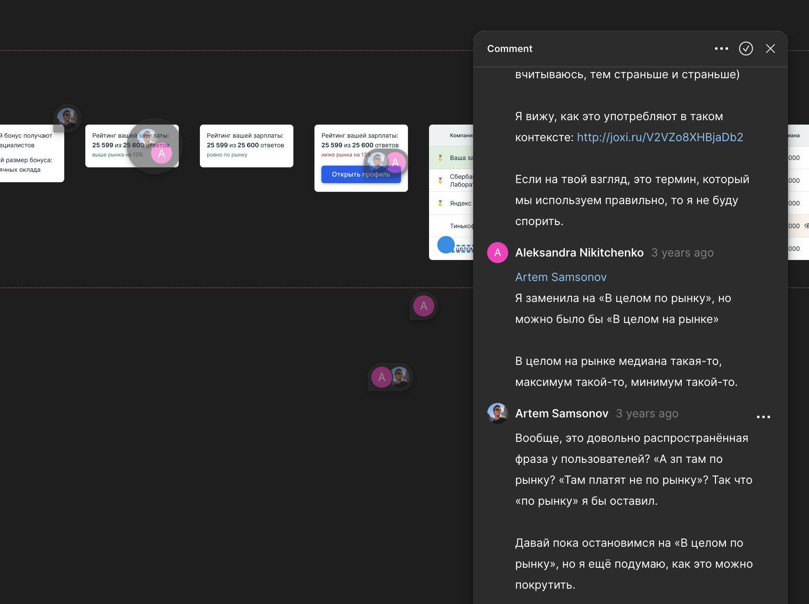</a><span class="article__image-caption">Пример обсуждения</span></p>
          <p>Разработчикам передали не только подробные макеты, но и текстовые спецификации с прототипами.</p>
          <p><a href="https://www.figma.com/proto/gRAEj3xOESxAVwgkzbZjJo/%E2%9C%85-Calc-%E2%86%92-Iteration-1?page-id=701%3A45383&amp;node-id=794-55069&amp;p=f&amp;viewport=455%2C342%2C0.16&amp;t=JKYRqaQhiauFifht-1&amp;scaling=min-zoom&amp;content-scaling=fixed&amp;starting-point-node-id=794%3A55069" target="_blanc">Пример кликабельного прототипа</a></p>
        </p>
        <h2>Результаты</h2>
        <ul> 
          <li>MAU сервиса вырос на 
            <attr>NDA</attr> п.п. (→ просмотры вакансий → отклики → одобрения → наймы → выручка)
          </li>
          <li>Компании купили обощённую аналитику на 
            <attr>NDA</attr> миллионов рублей в первом же квартале (→ выручка)
          </li>
        </ul>
        <p><strong>Фан-факт:</strong> кнопка «Открыть профиль» в кейсе «Ваша зарплата ниже рынка» подняла открытие профилей. Однако, к росту наймов это не привело — чаще всего профили открывали маловостребованные специалисты уровня junior.</p>
        <h2>Чему я научился</h2>
        <p>Принцип <a href="https://www.nngroup.com/articles/progressive-disclosure/">Progressive Disclosure (nngroup.com)</a> работает — если пользователь видит даже заблюренную ценность, он готов поделиться чувствительными данными.</p>
        <p>Маленькие и на первый взгляд необязательные детали важны. Цветная маркировка позиции на рынке, скрытие зарплаты — недорогие в разработке вещи, но дарят пользователю ощущение заботы и аккуратности (<a href="https://www.nngroup.com/articles/peak-end-rule/">Peak–End Rule</a>, Daniel Kahneman, 1999).</p>
        <div class="sign"><strong>Артём Самсонов,</strong>ведущий продуктовый дизайнер
          <p><a href="https://artemsamsonov.com">artemsamsonov.com</a> <br> telegram: @forrrealism <br> почта: sayocean450🐶gmail.com</p>
        </div>
      </section>
    </div>
  </div>
<script type="text/javascript" src="./js/bundle.js"></script></body>